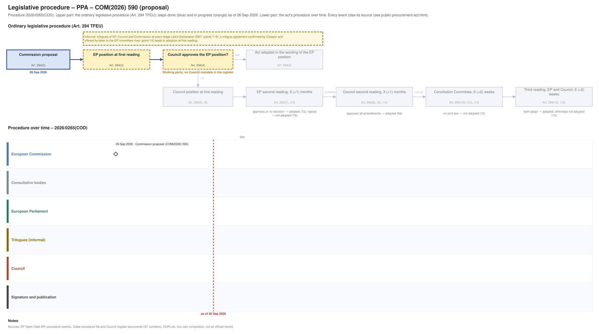

← All procedures · Regulation timeline
Procedure 2026/0265(COD), ongoing, as of 26 Sep 2026. Drawing: SVG · PNG · PDF (A3) · draw.io · Page as Markdown: public-procurement-act.md
| Stage | Commission proposal |
|---|---|
| Parliament | not yet referred to committee |
| Council | working party, latest document 10 Sep 2026 |
| Latest activity | 10 Sep 2026 · Council: Proposal for a REGULATION OF THE EUROPEAN PARLIAMENT AND OF THE COUNCIL on public … (ST 12969/26) |
| Next steps | Referral to an EP committee; Council working party |

| Date | Actor | Event | Document | Source |
|---|---|---|---|---|
| 2026-09-09 | European Commission | Commission proposal (Art. 294(2) TFEU) | COM(2026) 590 | Cellar (CELEX 52026PC0590) |
| Date | Document | Kind | Subject |
|---|---|---|---|
| 2026-09-10 | ST 12969/26 | council-transmission | Proposal for a REGULATION OF THE EUROPEAN PARLIAMENT AND OF THE COUNCIL on public contracts and concessions, repealing Directives 2014/23/EU, 2014/24/EU and … |
| 2026-09-10 | ST 12969/26 ADD 1 | council-transmission | ANNEXES to the REGULATION OF THE EUROPEAN PARLIAMENT AND OF THE COUNCIL on public contracts and concessions, repealing Directives 2014/23/EU, 2014/24/EU and … |
| 2026-09-10 | ST 12969/26 ADD 2 | council-transmission | COMMISSION STAFF WORKING DOCUMENT Subsidiarity Grid Accompanying the document Proposal for a REGULATION OF THE EUROPEAN PARLIAMENT AND OF THE COUNCIL on public … |
| 2026-09-10 | ST 12969/26 ADD 3 | council-transmission | COMMISSION STAFF WORKING DOCUMENT IMPACT ASSESSMENT REPORT Accompanying the document Proposal for a REGULATION OF THE EUROPEAN PARLIAMENT AND OF THE COUNCIL on … |
| 2026-09-10 | ST 12969/26 ADD 4 | council-transmission | COMMISSION STAFF WORKING DOCUMENT EXECUTIVE SUMMARY OF THE IMPACT ASSESSMENT REPORT Accompanying the document Proposal for a REGULATION OF THE EUROPEAN … |
| 2026-09-10 | ST 12969/26 ADD 5 | council-transmission | REGULATORY SCRUTINY BOARD OPINION Public Procurement Act |
{kind=link}
{kind=link}